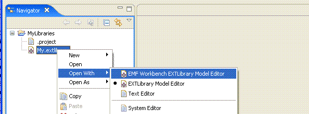

This example describes the usage of the transaction framework through the workspace integration. It demonstrates how a UI could be hooked up using the eclipse operation history framework to allow UI and non-UI threads to read and make changes to a transactional editing domain.
Please refer to the document Eclipse Modeling Framework Technology Examples Overview for reviewing the library meta-model used as the basis for demonstrating the capabilities in this example.
This example plug-in is named org.eclipse.emf.workspace.examples.library.editor.
This plug-in contributes a new EXTLibrary editor for opening and modifying existing library
files:
Please refer to the tutorial Workspace Integration Tutorial for reviewing the code samples within this example
Refer to this example if you need:
Copyright (c) 2000,2005 IBM Corporation and others. All Rights Reserved.